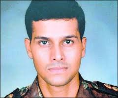

Sandeep Unnikrishnan
Sandeep Unnikrishnan (15 March 1977 – 28 November 2008) was an officer in the Indian Army serving in the elite Special Action Group of the National Security Guards. He was killed in action during the November 2008 Mumbai attacks.[1] He was consequently awarded the Ashoka Chakra, India's highest peace time gallantry award, on 26 January 2009.[2]
Sandeep Unnikrishnan came from a Nair family residing in Bangalore, where they had moved to Cheruvannur, Kozhikode District, Kerala.[3] He was the only son of retired ISRO officer K. Unnikrishnan and Dhanalakshmi Unnikrishnan.[4]
Major Sandeep Unnikrishnan led the commando operation launched on 27th November 2008 to flush out terrorists from Hotel Taj Mahal, Mumbai in which he rescued 14 hostages. During the operation, his team came under intense hostile fire, in which one of his team members got grievously injured. Major Sandeep pinned down the terrorists with accurate fire and rescued the injured commando to safety. In the process, he was shot in his right arm. Despite his injuries, he continued to fight the terrorists till his last breath.
Unnikrishnan spent 14 years at the Frank Anthony Public School in Bangalore before graduating in 1995 in the ISC Science stream.[clarification needed] He wanted to join the Army, even attending school in a crew cut. His peers and teachers recalled him as being a good athlete who was active in school activities and sports events.[5] He was also a member of the school choir and enjoyed watching movies.[5][6]
Unnikrishnan joined the National Defence Academy (India) (NDA), Pune, Maharashtra in 1995. He was a part of the Oscar Squadron (No. 4 Battalion) and a graduate of the 94th Course of NDA. He graduated as a Bachelor of Arts. His NDA friends remember him as "selfless", "generous" and "calm and composed".[7]
He was commissioned as a lieutenant to the 7th Battalion of the Bihar Regiment[1] (Infantry) on 12 July 1999. After serving the Indian Army in different locations in Jammu and Kashmir and Rajasthan during counter insurgencies for two terms, he was selected to join the National Security Guards. On completion of training, he was assigned to the Special Action Group (SAG) of NSG on January 2007 and participated in various operations of the NSG.[8] During the 'Ghatak course' (at the Commando Wing (Infantry School), Belgaum), the most difficult course of the Army, Unnikrishnan topped the course, earning an "Instructor Grading" and commendation. He opted for the NSG commando service which he joined on deputation in 2006.[9]
During Operation Vijay in July 1999, he was regarded positively at the forward posts in the face of heavy artillery firing and small arms fire by Pakistan troops. On the evening of 31 December 1999,[clarification needed] Unnikrishnan led a team of six soldiers and managed to establish a post 200 metres from the opposing side and under direct observation and fire.[10]
On the night of 26 November 2008, several iconic buildings in South Mumbai were attacked during 26/11. One of the buildings where hostage were held was the 100-year old Taj Mahal Palace Hotel. Unnikrishnan was the team commander of 51 SAG deployed in the operation at the hotel to rescue the hostages. He entered the hotel in a group of 10 commandos and reached the sixth floor through the staircase. As the team descended the stairs, they suspected perpetrators on the third floor. A few women were held as hostages in a room which was locked from the inside. After breaking open the door, the round of fire by the perpetrators hit Commando Sunil Yadav, who was Unnikrishnan's colleague.[11]